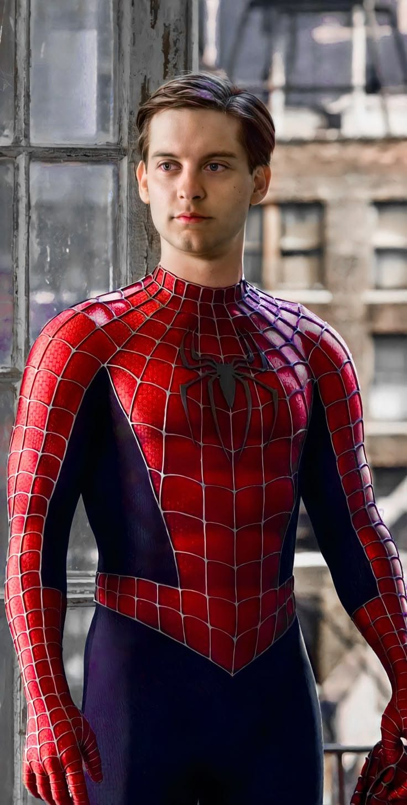

Homem-Aranha de Tobey Maguire

Resumo
Tobey Maguire foi o primeiro Homem-Aranha dos cinemas neste século. Na trilogia dirigida por Sam Raimi, Peter Parker é um jovem tímido de Nova York que ganha poderes ao ser picado por uma aranha. Depois da morte do Tio Ben, ele aprende que grandes poderes trazem grandes responsabilidades e passa a proteger a cidade.
A trilogia começou em 2002, com Homem-Aranha, e continuou com Homem-Aranha 2 (2004) e Homem-Aranha 3 (2007). Na história, Peter vive entre os problemas da vida comum, como pagar o aluguel, entregar pizzas e estudar, e as responsabilidades de ser um herói. O romance com Mary Jane Watson e a amizade com Harry Osborn são centrais nos três filmes.
O primeiro filme foi um grande sucesso e ajudou a transformar os filmes de super-heróis em uma das maiores atrações do cinema. Homem-Aranha 2 é considerado por muitos fãs o melhor da trilogia e ganhou o Oscar de Efeitos Visuais. Tobey Maguire voltou ao papel em Homem-Aranha: Sem Volta Para Casa (2021), reencontrando antigos vilões e conhecendo os outros Peter Parkers.
Ficha rápida
- Filmes: Homem-Aranha (2002), Homem-Aranha 2 (2004) e Homem-Aranha 3 (2007)
- Direção: Sam Raimi
- Interesse amoroso: Mary Jane Watson (Kirsten Dunst)
- Vilões: Duende Verde, Doutor Octopus, Homem-Areia e Venom
- Curiosidade: nesses filmes as teias saem do próprio pulso dele
- Volta: reapareceu em Homem-Aranha: Sem Volta Para Casa (2021)